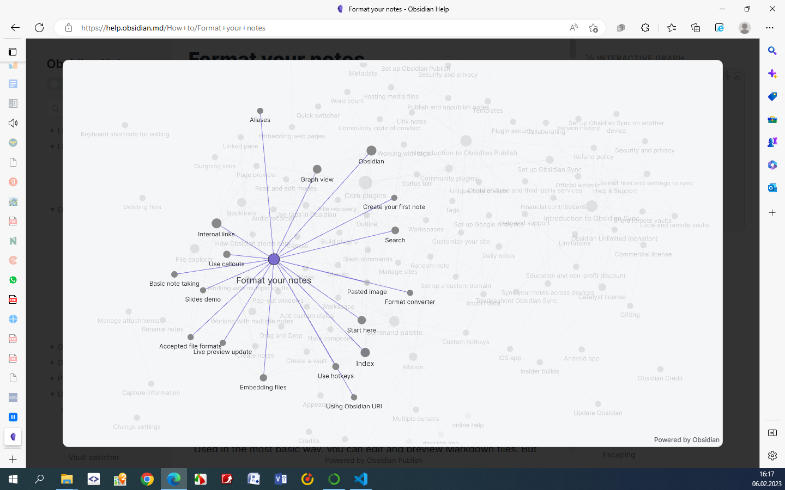
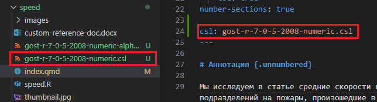

flowchart LR
A[заявка]
B[текст доклада]
C(статья в диссертации)
D(Итоговый доклад)
A --> C
B --> C
B --> D
Малютин О.С.
6 февраля 2023 г.
6 февраля 2023, понедельник.
Поскольку проектов, в том числе и по теме разещения ПСЧ, сталос лишком много и в них стало тяжело ориентирвоаться, пришлось реорганизовать папки и перенастроить ссылки в SmartGit.
Кстати, пользуюсь для управления проектами Git приложением SmartGit. Сильно упрощает работу, несмотря на то, что небольшие правки можно делать непосредственно в VSC.
Выбрал предвартиельную тему для доклада на “Круглый стол в области информационных технологий предупреждения и ликвидации пожаров и чрезвычайных ситуаций” Письмо
Оформил заявку в репозитории кандидатской работы, заодно разобрался с тем, как работают ссылки на переменные и включения в Quarto.
Включение это включение одного докмента в текст другого. Выполняется указанием следующего кода:
{{< include example.qmd >}}
При помощи включения я организовал работу следующим образом:
flowchart LR
A[заявка]
B[текст доклада]
C(статья в диссертации)
D(Итоговый доклад)
A --> C
B --> C
B --> D
Переменные – очень удобный инструмент Quarto, позволяющий во всем тексте одновременно вставлять некоторые значения, например, названия организации, программного обеспечения, версии документации и т.д.
В моем случае, я использовал переменные для указания своих данных и их вставки в итоговый документ.
Переменные проекта должны храниться в файле _variables.yml:
academy_name: "ФГБОУ ВО Сибирская пожарно-спасательная академия ГПС МЧС России"
author:
name_full: "Малютин Олег Сергеевич"
name_short: "Малютин О.С."Для вставки переменных в текст статьи исользуется следующий синтаксис: {{< var academy_name >>}}} или {{< var author.name_full >>}}}
Использование Python в Qurto не слишком просто, так как требуется устанавливать ряд дополнительных библиотек. При чем это нужно делать даже в том случае, если код Python не выполняется, а просто приведен в блоках кода. Так что видимо для использования Python в Quarto лучше создавать отдельное окружение…
Обсудили вопросы текущей работы с Матеровым Е.Н. и Бабенышевым С.В.:
genesis и отчета НИР.Немного вник в идеи приложения Obsidian. В двух словах - это редактор заметок схожий с Evernote, основной фичей которого является графовое представление заметок:

Ссылки:
Разобрался с цитированием источников в формате [n] – по ГОСТу.
Для этого используются файлы .csl – Citation Style Language источник.
Скачать можно из репозитория: https://github.com/citation-style-language/styles
Нужен файл gost-r-7-0-5-2008-numeric-alphabetical.csl. Скачиваем его, добавляем в папку с проектм и в заголовке прописываем csl: gost-r-7-0-5-2008-numeric-alphabetical.csl.
